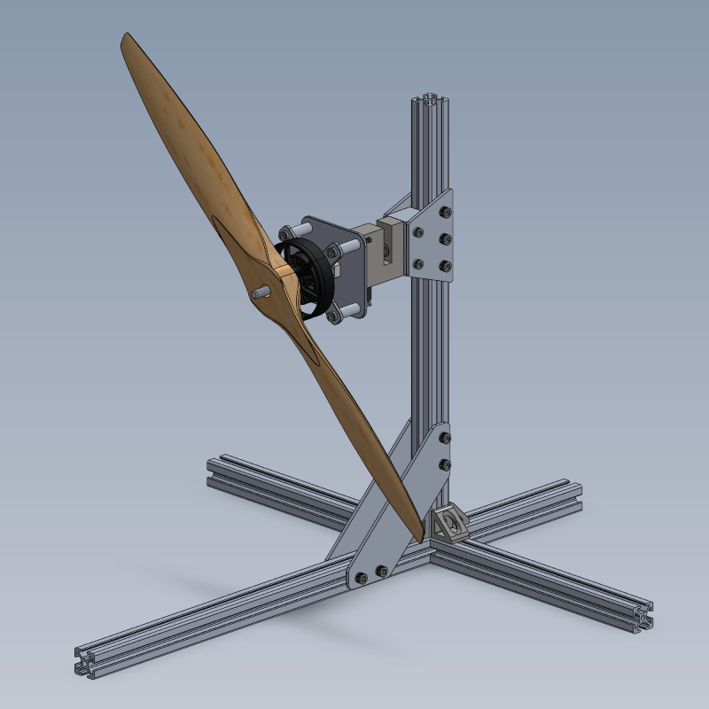

Thrust Test Rig
Developed and manufactured a propeller thrust test rig for Aerospace SAE at Berkeley.

Effects of Filament Dyes on 3D Printed Structures
Conducted destructive tensile and bending test on 3D printed specimens using an Instron 5500, analyzing data to quantify the mechanical impact of pigment additives in PLA filament.

Real-Time Plotter
Developed a Wi-Fi-enabled plotting system utilizing LabVIEW for telemetry and an ESP32 for low-level stepper motor control via TCP/IP protocols.

Mobile Desk
Designed and manufactured a portable workstation conforming to ASME Y14.5M GD&T standards; fabricated aluminum components using manual machining to +/- 0.001" tolerances.

Dark Star Modeling
Developed a Python simulation to numerically solve the Tolman-Oppenheimer-Volkoff equations and model Dark Matter self-interactions for presentation at the 2023 UCI Building Bridges Conference.

Wall Climbing Vehicle
Designed a suction-based rover using SolidWorks, utilizing laser-cut living hinges to achieve complex flexible geometries for rapid chassis prototyping.

Downwind Vehicle
Redesigned and optimized Derek Muller's Downwind Faster than the Wind vehicle.